Outcome
flowchart LR
F["site/ frame: index · 404 · site.css · site.js"] --> B["cargo xtask site build"]
R["README · PRIVACY · GUIDE · links.rs"] -- "pitch · sub · privacy lead split · alts · heading" --> B
J["release JSON"] -- "version · date · 11 files · SHA256SUMS" --> B
S["6 shots + favicon + wordmark + card"] -- "PNG re-encoded, same pixels" --> B
B --> C{"W2 checks + motion + scoped contrast"}
C -- "green" --> O["13 files, 1.0 MB"]
T["site/site.test.mjs"] -. "skipped by the build" .-> B
T --> N["node --test (18 cases) via xtask"]
| Piece | Where | What it is now |
|---|---|---|
| Pages | site/index.html, site/404.html | the design's #t-index / #t-404 on W2's markers: top bar, hero with the CSS V1 log, s1 window, five alternating stories, three tiles, privacy band, the round-4 download block (#one hidden, details#all open, five dl-* blocks), footer; 404 by absolute /Trawler/ paths |
| Styles | site/site.css (10,661 B) | the design's stylesheet, tokens renamed to W2's --text*/--bg* contract (same colours), the log and title bar as their own token scopes |
| Script | site/site.js (1,788 B of 4,096) | the design's round-4 reference, byte for byte |
| Script tests | site/site.test.mjs | node:test + node:vm: 14 navigator fixtures + 4 show() tests over a DOM stub |
| Build | xtask/src/site.rs | skips *.test.mjs; markers {{published}} {{privacy-lead}} {{privacy-rest}} {{features-heading}} {{alt:<shot>}}; PNG re-encode; motion check; contrast per token scope; ASSETS +s3 s4 s5 s6 s10, −wordmark-light |
| Notes | xtask/src/notes_write.rs | counts a .mjs test module like .js, so test/v2 can name site.test.mjs |
| Built file | Bytes | Design said |
|---|---|---|
| index.html + 404.html + site.css | 16,232 + 1,027 + 10,661 = 27,920 | ≤ 40 KB (≈ 26 KB) |
| s1 · s6 · s3 · s4 · s5 · s10 (re-encoded) | 219,795 · 69,281 · 37,703 · 199,063 · 189,310 · 172,632 = 887,784 | 887,784 — exact |
| first view (pages + css + js + wordmark + favicon) | ≈ 53 KB | ≈ 66 KB, no shot above the fold |
The page, rendered
Headless Chrome 156 over the DevTools protocol, served from 127.0.0.1 under /Trawler/: colour scheme, reduced motion and script-off emulated; other systems through a user-agent override with client hints, so site.js ran its real detection. Full pages at 1440 px are scaled 0.5, at 390 px 0.6.
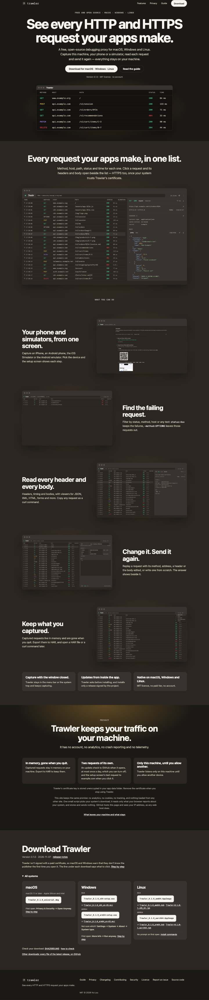
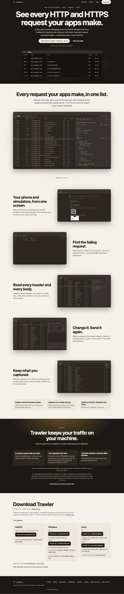
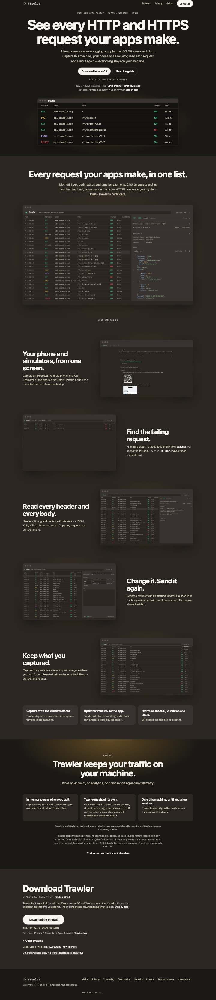
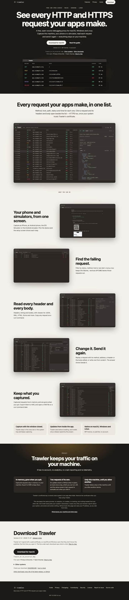
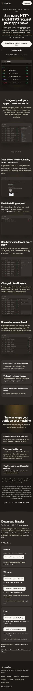
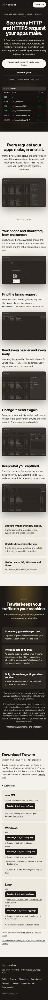
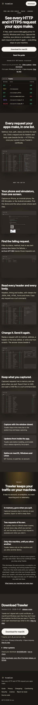
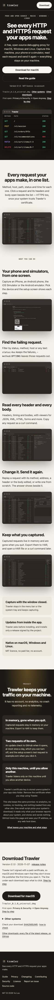
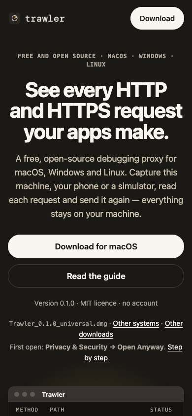
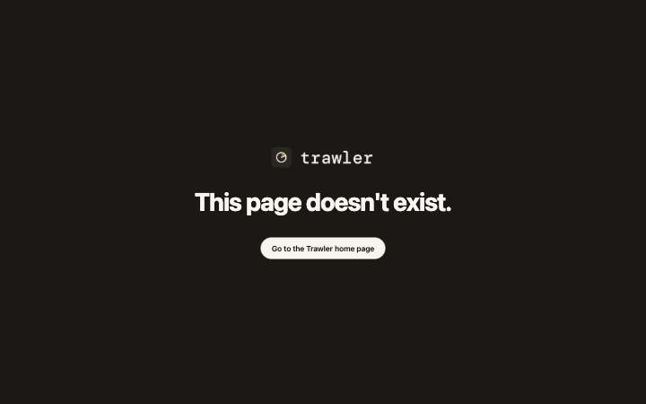
/Trawler/nope/missing: CSS and wordmark load by absolute pathEach detected system
| State (Chrome, emulated) | #get / #one-get href | #one | #all | summary |
|---|---|---|---|---|
| script off | #download | hidden | open | All systems |
| macos (this Mac) | …/v0.1.0/Trawler_0.1.0_universal.dmg | shown | closed | Other systems |
windows-x64 (hint x86) | …/Trawler_0.1.0_x64-setup.exe | shown | closed | Other systems |
windows-arm64 (hint arm) | …/Trawler_0.1.0_arm64-setup.exe | shown | closed | Other systems |
| linux-x64 (Firefox UA) | …/Trawler_0.1.0_amd64.AppImage | shown | closed | Other systems |
| linux-arm64 (Firefox UA) | …/Trawler_0.1.0_aarch64.AppImage | shown | closed | Other systems |
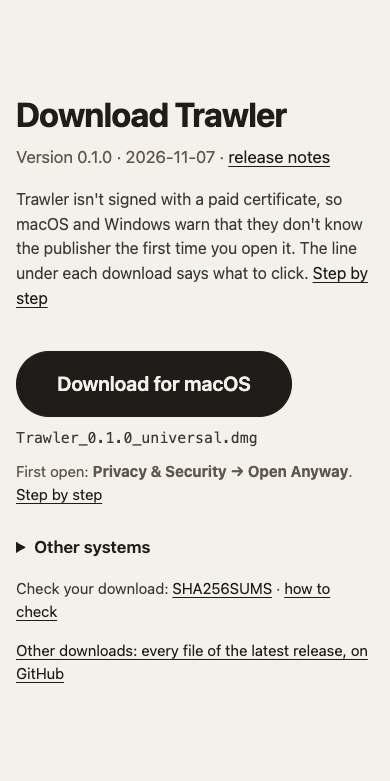
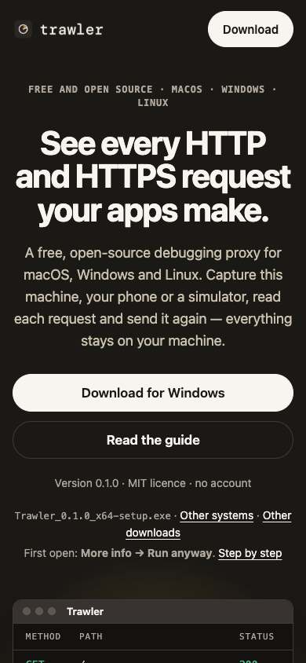
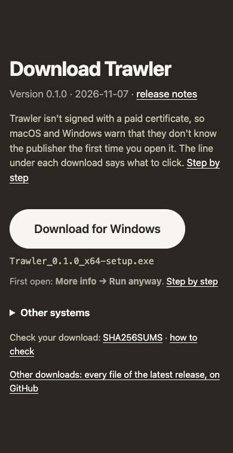
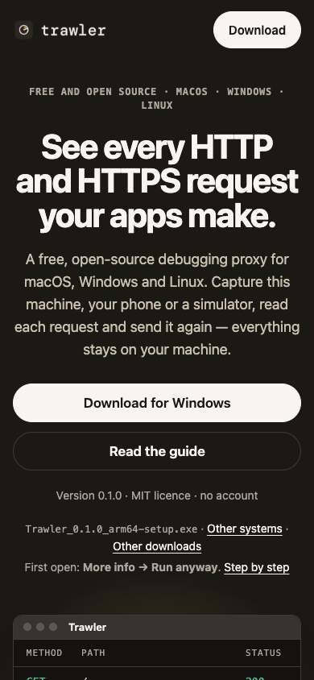
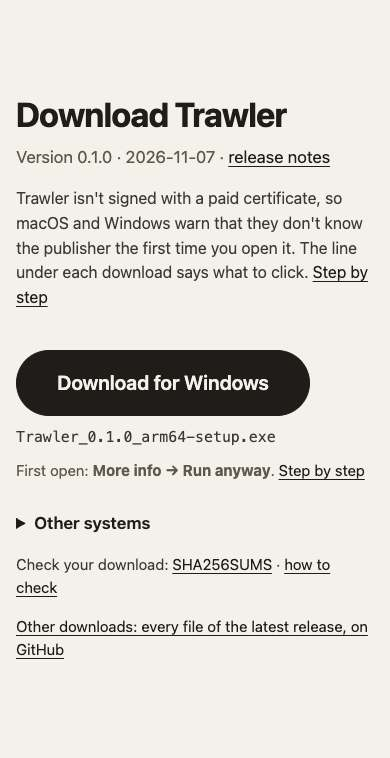
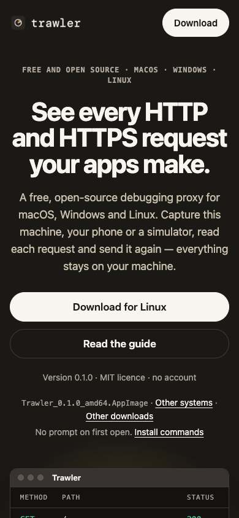
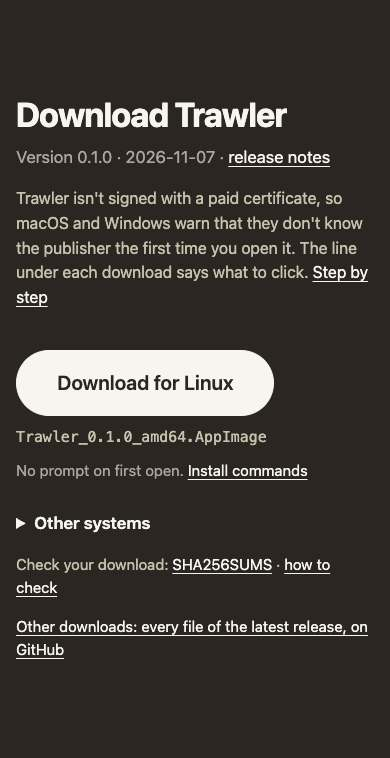
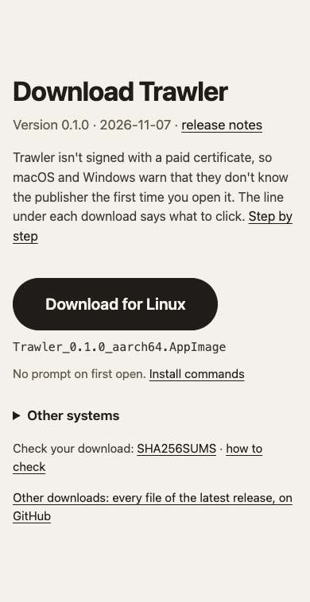
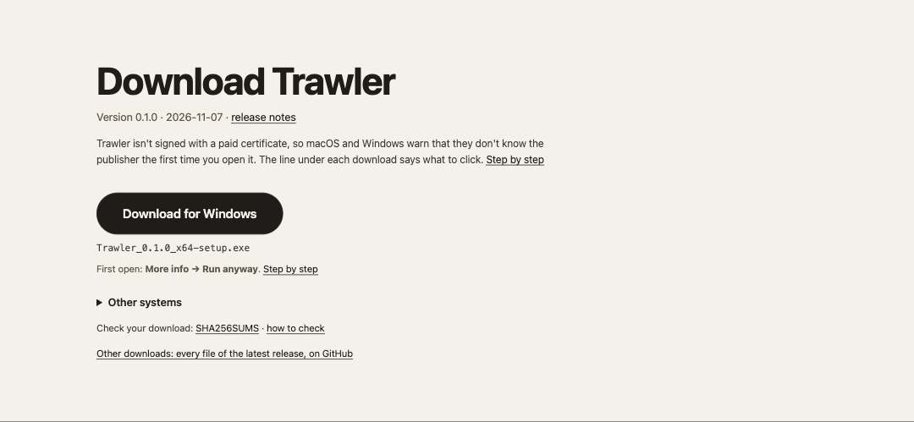
Evidence
| Layer | Proof |
|---|---|
| Unit (Rust) | 48 site::tests (6 new: motion rules, contrast per scope, PNG re-encode pixels/alpha, alt and privacy split, published date, test files never ship) · 10 notes_write::tests (the .mjs count; red with the token removed) |
| Unit (JS) | node --test site/site.test.mjs: 18/18 — the 14 fixtures (Safari/Chrome Mac, iPad desktop site, Edge x64/Arm, hint refused, Firefox Windows/Linux x64/arm64, Chrome Linux arm64 behind a reduced UA, Android, iPhone, ChromeOS by UA, nothing reported) + both buttons, #one/#pick, #all closed as “Other systems”, the arm hint, unknown and missing block leave the base. Mutation check: dropping all.open = false, the summary text, the one-get write or the cros guard each turns a test red. test/v2 counts 5 declarations (the 14 fixtures are one looped test() |
| Integration | 8 in xtask/tests/suite/site.rs (3 new): every shipped PNG decodes to its source's pixels and is no larger; the built page hides #one/#pick, keeps details#all open with three cards and five dl-* blocks; node --test green |
| Suite | cargo xtask gate0 green: 1577 tests, fmt, clippy pedantic |
| Browser | the shots above; real Chrome's site.js picked the file in each of the five states (table above) |
| Review | round 1 on 9877b2b0: PASS — 3 finders (correctness, efficiency, altitude), 12 candidates, 4 proposed important all refuted by 3 verifiers (s1 lazy: not in the first view; budget gate: not a specified gate; PNG layer: icons.rs helpers force RGBA/default compression; contrast at-rule scope: a pre-existing limit this diff narrowed), 8 nits recorded and waived with reasons in the cr/v5 note |
| e2e | waived: the epic's e2e is the live deploy after the owner's settings |
Deviations
| From the plan / design | Why |
|---|---|
W3 built the motion check, the PNG re-encode, the site.test.mjs runner and token scopes that the epic plan v3 and the design list as W2's | absent at 3a93c473; the requirement needed them tested |
Tokens renamed (--ink → --text, --body → --text-body, --mute → --text-mute, --raise → --bg-raise); log and title-bar colours became tokens | W2's contrast contract names tokens --text*/--bg*; colours unchanged |
The 404 carries site::CSP with script-src 'self', not the design's script-less CSP | W2's check wants one exact CSP per page; not weakened or forked here (follow-up) |
meta description = pitch, og:description = sub line | the design's C2 row is ambiguous; the plan's Head row says description = pitch |
No cargo xtask site shots command | a manual, non-gating step; a scratch DevTools-protocol script took the shots |
notes_write counts .mjs | the brief's path is site/site.test.mjs; the counter refused the kind |
Try it
| Step | Command |
|---|---|
| build under the path Pages serves | cd /Users/nguyenvanluong/Documents/proj/misc/Trawler-pages-w3 && rm -rf target/pages && cargo xtask site build --release xtask/tests/fixtures/site/release-v0.1.0.json --out target/pages/Trawler |
| serve (Ctrl-C stops) | cd /Users/nguyenvanluong/Documents/proj/misc/Trawler-pages-w3 && python3 -m http.server -d target/pages 8765 --bind 127.0.0.1 |
| open | open http://127.0.0.1:8765/Trawler/ (your Mac → the macOS state) and …/Trawler/404.html |
| script off · theme · motion | Chrome DevTools: ⌘⇧P “Disable JavaScript”; Rendering panel → “Emulate CSS prefers-color-scheme” and “prefers-reduced-motion”; reload |
| another system (then reload) | cd /Users/nguyenvanluong/Documents/proj/misc/Trawler-pages-w3 && { printf '(function (navigator) {\n'; cat site/site.js; printf '})({ platform: "Win32", maxTouchPoints: 0, userAgent: "Windows NT 10.0; ARM64" });\n'; } > target/pages/Trawler/site.js — swap the object for { platform: "Win32", userAgent: "Win64; x64" }, { platform: "Linux x86_64" }, { platform: "Linux aarch64" } or { platform: "iPhone" } (unknown); the build step restores the real script |
| the script's own tests | cd /Users/nguyenvanluong/Documents/proj/misc/Trawler-pages-w3 && node --test site/site.test.mjs |
| State | Look at |
|---|---|
| script off / unknown | hero button “Download for macOS · Windows · Linux” jumps to the list; no big button; “All systems” open with every file; “Other downloads” and SHA256SUMS links below |
| detected | hero button names the system and downloads its file; under it the file name · Other systems · Other downloads and the first-open line; the download section's one big button; the list folded as “Other systems”, one click opens it unchanged |
| Windows on Arm | arm64-setup.exe (via the wrapper above, or a real Chromium on Arm through the hint) |
| dark / light | top bar, hero, privacy band and footer dark in both; paper sections switch |
| motion | six log rows arrive in under 4 s then hold; under reduced motion everything is at rest |
| 390 px | one column, log drops Host and Time, no sideways scroll; only “Download” in the top bar |
Not verified
Safari and Firefox rendering (the shots are Chrome only), scroll-driven reveals in Safari, a real phone, and detection on real Windows on Arm, Linux arm64, iPadOS and ChromeOS (emulated or stubbed only). That GitHub Pages serves the 404 at depth as the scratch server did (W4, live).
Distillation
No T2 change in W3: the site's truths (DEC-92, the UC-INSTALL entry point, the DEC-89 rule 6 and 10 and DEC-91 amendments, the docs/workflow.html code-path line) are W5's distillation of the whole epic. W5 should also correct the epic plan's claim that W2 shipped the motion check, the PNG re-encode and the script-test runner (W3 did).
Follow-ups
| Item | Owner |
|---|---|
| Story drift check (each story's README bullet still exists word for word): in the design, built by neither W2 nor W3 | W5 or a later WU |
Per-page CSP: the 404 without script-src, as the design's Head row says — a change to W2's exact-CSP check | owner ruling, then a WU |
The verify-doc PostToolUse hook reads site/*.html as governed docs and reports every {{marker}} href as broken (advisory; it never blocks) | router |
Contrast tokens redeclared inside an at-rule (e.g. .night under the dark query) are not checked — a stated limit; none exist today | with the next stylesheet change that needs one |
No gate on page weight or loading="lazy" (budgets in the design, not gates in the plan) | owner, if wanted |
The CSS parser and the contrast/motion checks could leave site.rs (2,175 lines) for their own module | refactor, later |
| W4's first live run: the 404 at depth, no cookie, one origin in DevTools Network | W4 / owner |